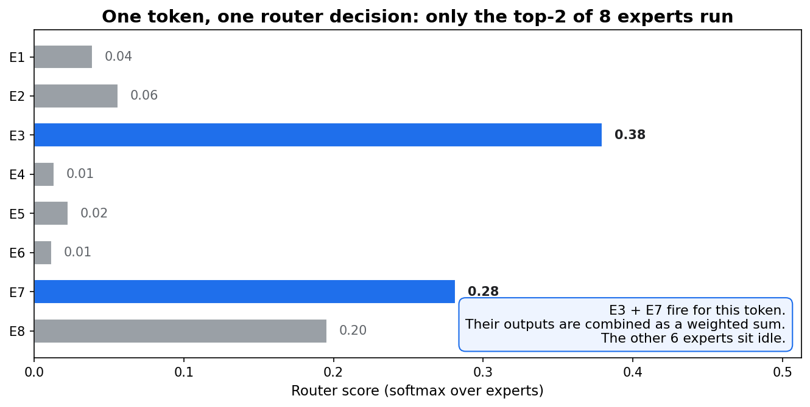
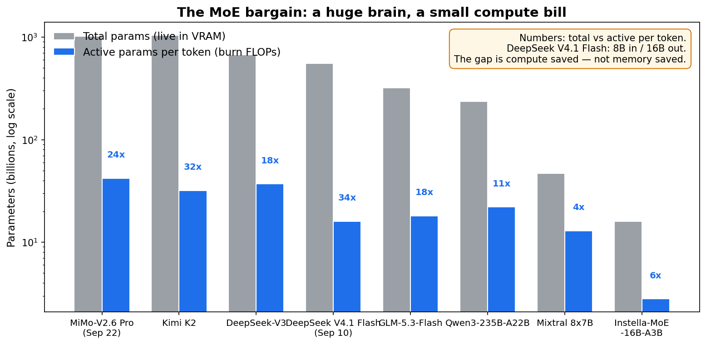
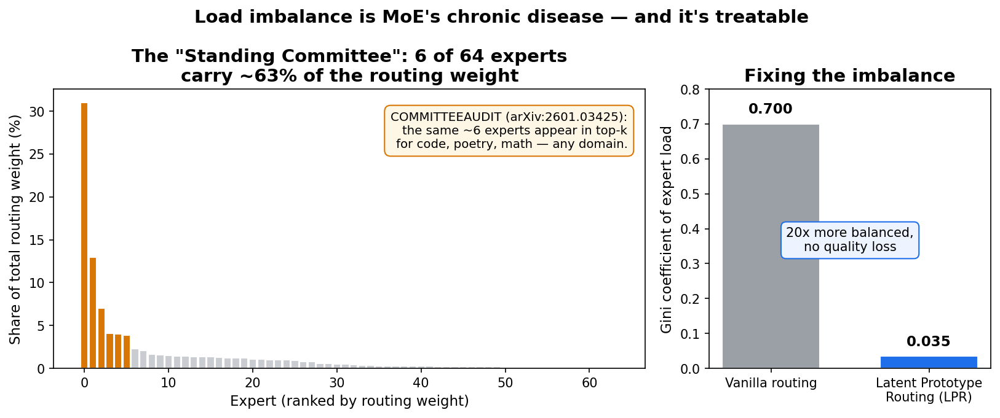
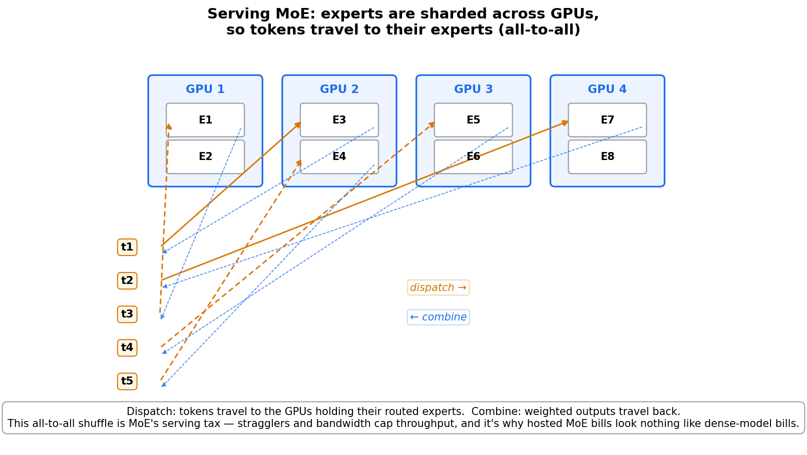

Two open-weight releases, twelve days apart. DeepSeek V4.1 Flash (September 10): 552 billion parameters — and about 8 billion of them fire on each input token, 16 billion on output. Xiaomi MiMo-V2.6 Pro (September 22): 1.02 trillion parameters, with just 42 billion active per token. Both MIT-licensed. Both cheaper per token than models a tenth their size.
The trick isn't new. It's a 2017 idea (Shazeer et al.'s sparsely-gated MoE, 137B parameters) that quietly conquered the frontier: of the seven frontier open-weight models people actually deploy in 2026, six are Mixture-of-Experts. This is the architecture eating the scaling curve — so here's how it works, where it breaks, and what September's research says about fixing it.
ELI5: the hospital with specialists on call
A dense transformer is a hospital where every doctor examines every patient. Chest pain? All 200 doctors walk in. Splinter? All 200 doctors walk in. You pay for all of them, every time.
A Mixture-of-Experts model is a hospital with a triage nurse. Each patient (token) gets routed to only the 2–8 specialists relevant to their case. The hospital still employs 200 specialists — that's the model's knowledge capacity — but each patient only pays for a handful. Total parameters are the staff directory. Active parameters are the bill.
That's the whole bargain: a huge brain, a small compute bill. DeepSeek-V3 carries 671B parameters but computes like a 37B model — an 18× gap between what it knows and what it spends. The September releases pushed it further: V4.1 Flash runs 552B of knowledge on ~16B of compute per output token, a 34× gap. Only ~3% of the brain wakes up.

How it works: a router, k experts, and a weighted vote
In a standard transformer block, the feed-forward network (FFN) holds most of the parameters and most of the compute. MoE replaces that single FFN with N smaller expert networks plus a router (the gating network):
- Score. The router reads the token and scores every expert:
scores = softmax(x · W_router). - Select. Keep only the top-k (typically 2–8). The rest sit idle for this token.
- Combine. Each selected expert processes the token; outputs merge as a weighted sum using the router's scores:
y = Σ gᵢ · Expertᵢ(x).
Modern variants add a shared expert that every token also passes through (DeepSeek's design: 256 routed experts + 1 shared), which soaks up common knowledge so routed experts can specialize.
Training has one notorious failure mode: router collapse. Left alone, the router discovers 3 favorite experts and starves the rest — 61 experts never learn anything. The standard fix is an auxiliary load-balancing loss (from Switch Transformer): penalize the router when traffic concentrates, L_aux = α · N · Σ fᵢ · Pᵢ, where fᵢ is the fraction of tokens sent to expert i and Pᵢ the average router probability. It's a tax on favoritism.
And the catch the marketing skips: the savings are compute, not memory. Every expert must sit in VRAM whether or not a given token uses it. DeepSeek-V3's 671B parameters in FP8 need ~671 GB of weights — a multi-GPU server — even though each token computes like a 37B model. MoE buys you a bigger brain for the same FLOP bill, then hands you the memory bill.

The numbers (SOTA section)
September's leaderboard. The frontier is now an MoE monoculture, and the licenses are getting friendlier:
| Model | Released | Total / active | Experts (top-k) | License |
|---|---|---|---|---|
| MiMo-V2.6 Pro | Sep 22, 2026 | 1.02T / 42B | 384 (8) | MIT |
| DeepSeek V4.1 Flash | Sep 10, 2026 | 552B / 8B in, 16B out | — | MIT |
| GLM-5.3-Flash | Aug 26, 2026 | 320B / 18B | — | MIT |
| Qwen3-235B-A22B | 2025 | 235B / 22B | 128 (8) | open |
| DeepSeek-V3 | Dec 2024 | 671B / 37B | 256+1 shared (8) | open |
| Instella-MoE-16B-A3B | Jul 2026 | 16B / 2.8B | 64 routed (6) + 2 shared | fully open* |
*AMD's Instella is the "fully open" outlier: trained end-to-end on MI300X/MI325X GPUs with open Primus/Miles frameworks — 12.7% faster training and 39.2% lower time-to-first-token from its Gated MLA + FarSkip-Collective design. (Weights carry a ResearchRAIL non-commercial limit; the training code is MIT.)
Pricing tells the story: V4.1 Flash at $0.15/$0.60 per million tokens off-peak and MiMo-V2.6 Pro at $0.435/$0.87 — frontier-adjacent intelligence at dense-model prices, because the provider's compute cost is set by the active count.
The research front is attacking MoE's three chronic diseases:
- Do deep layers even need their own experts? UniPool (arXiv:2605.06665, May 2026) found that replacing a deep layer's learned top-k router with uniform random routing drops accuracy only 1.0–1.6 points — deep routers are mostly redundant. Its fix: one globally shared expert pool across all layers instead of per-layer expert sets. Result: 41.6–66.7% of the expert-parameter budget matches or beats vanilla MoE, and validation loss improves by up to 0.0386. Expert capacity stops scaling linearly with depth.
- Load imbalance is fixable. Latent Prototype Routing reframes routing as clustering and cuts the Gini coefficient of expert load from 0.70 to 0.035 across DeepSeek-V3, Qwen3-MoE, and Mixtral — a 20× more balanced system with no quality loss.
- The "Standing Committee." A 2026 audit (COMMITTEEAUDIT, arXiv:2601.03425) found ~6 of 64 experts appear in the top-k for the overwhelming majority of tokens regardless of domain — code, poetry, math — carrying 60–67% of total routing weight. Specialization is real, but a small generalist committee does most of the work.

The serving tax. Because no single GPU holds all experts, MoE serving shards them across GPUs — expert parallelism — and each token travels to the GPUs holding its experts, then the weighted outputs travel back. That all-to-all shuffle is pure overhead: bandwidth and stragglers cap throughput. Worse, it creates a verification blind spot: a June 2026 analysis ("The Expert Shuffle") showed a decentralized provider can silently cut top-k from 8 to 4 ("k-shunting") and stay nearly undetectable — because the Standing Committee dominates both runs, outputs overlap. Sampling-based checks can't catch it; only measurement of intermediate computation can.

The limits, stated plainly
- Memory doesn't sparsify. You pay VRAM for every parameter and FLOPs for the active few. "Open weights" at 552B–1T params means a multi-GPU server (V4.1 Flash's checkpoint is ~510 GB).
- Routing is the fragile part. Collapse, imbalance, and the standing-committee effect mean much of the expert count is decorative. UniPool's random-routing result is humbling: deep routers barely matter.
- Serving is a distributed-systems problem. All-to-all dispatch/combine, capacity scheduling, stragglers — MoE inference engineering looks more like HPC than like running a dense model.
- Verification has a hole. k-shunting in decentralized serving is currently hard to detect from outputs alone. If you're buying MoE inference from a third party, ask what they measure.
Takeaways
- MoE decouples knowledge from compute. Total params = capacity (memory bill); active params = cost per token (compute bill). September's releases push the gap to 24–34×.
- The router is the whole game. Top-k softmax gating + weighted sum is simple; keeping all experts alive via load-balancing losses is the hard part — and 2026 research (LPR, UniPool) is winning.
- Deep experts are redundant. UniPool showed random routing in deep layers costs ~1 point — the future is shared expert pools, not per-layer expert farms.
- The frontier is an MoE monoculture with MIT licenses. 6 of 7 deployed frontier open-weight models are MoE, and the September flagships ship MIT weights. The moat moved from weights to serving.
- Watch the serving layer, not the parameter count. All-to-all communication and k-shunting mean the interesting MoE problems in 2026 are systems and verification, not scale.
Companion notebook: moe_mixture_of_experts.ipynb — build a tiny MoE layer from scratch in NumPy (router, top-2 gating, load-balancing aux loss), train it on a toy task, and watch router collapse happen without the aux loss and disappear with it.
Sources: DeepSeek V4.1 Flash release details · MiMo-V2.6 Pro release · GLM-5.3-Flash model card · The Expert Shuffle: MoE serving's verification problem · The Expert Gap: routing and the verification blind spot · What is Mixture of Experts? (Sep 2026) · UniPool paper wiki · Latent Prototype Routing (LPR) · GPT-OSS-20B deployment analysis · AMD Instella-MoE